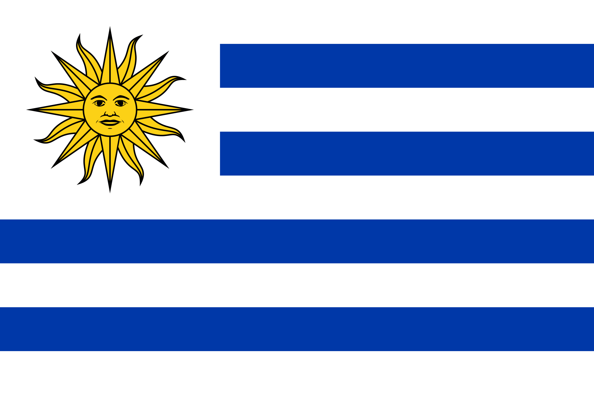

La país de Uruguay se encuentra en el este de América de Sur. La bandera del país tiene los colores azul y blanco, y tiene un imagen de un sol en el esquina superior derecha en un fondo blanco. Esos colores se puede ver en las estéticas de este sito.
